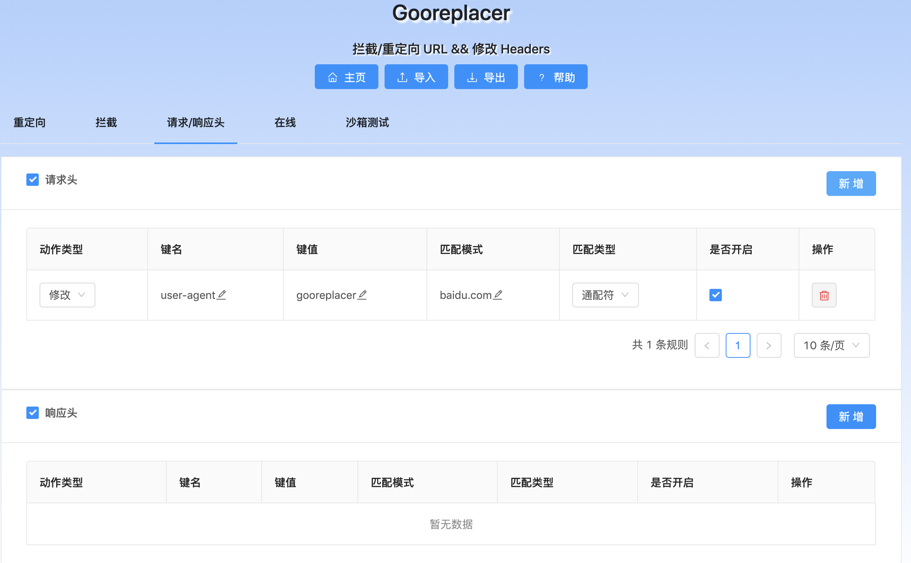

At first, Gooreplacer was created for redirecting Google Ajax/Api/Themes to other CDN to bypass Great Firewall since pages referring those are slow as molasses.
More features have been added since then, mainly:
- block/redirect URLs based on user-defined rules
- block/modify headers based on user-defined rules
- Test rules in sandbox
- i18n (English + 中文)
- Export/Import rules, sync between Firefox/Chrome/Edge...
- A new UI built with ClojureScript + Reagent ❤️
Most users prefer gooreplacer than other similar extensions(HTTPS Everywhere/Redirector) for ease-of-use. Why not give it a try?
Downloads
| Browser | Rate | Users |
|---|---|---|
 |
 |
 |
 |
 |
 |
Support
You can find more guides in Github README.
And if you have any questions or suggestions, welcome to open an issue or file me an email. Thank you for your time.